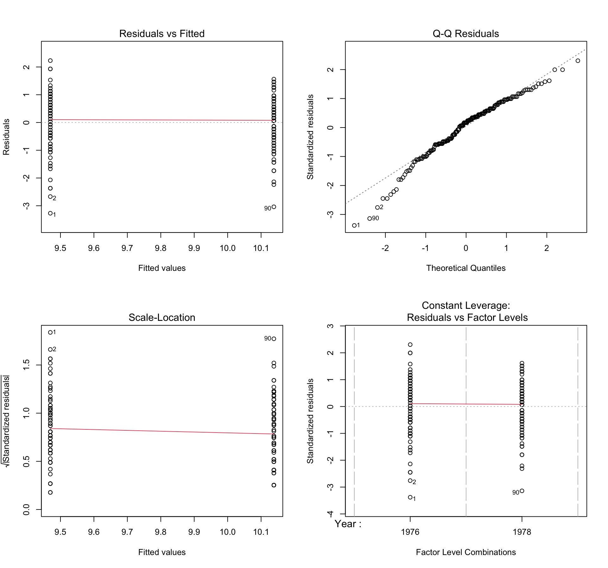

Do medium ground finches (Geospiza fortis) of Daphne Major (Galapagos) undergo natural selection of beak depth in response to food availability, due to drought?
Medium ground finch perching
Hypotheses:
This being an ecological study, my hypotheses are at the population-level. They refer to changes in beak depth across generations.
Null hypothesis (H0): Medium ground finch beak depth does not change after drought stress.
Alternative hypothesis (H1): Medium ground finch beak depth increases after drought stress. 1
In order to test these hypotheses, I will conduct a simple linear model analysis of finch beak depth data (measured as the depth at the base of the beak, in mm) in the years before and after a severe drought – occurring in 1977. If the data show a significant increase in beak depth, we can conclude that natural selection has occurred. (Fowler 2013)
Methods - Statistical Analysis
The Grant dataset includes more than 20 generations of Medium ground finch beak depth data. Its format includes 178 observations on the following 2 variables: Year (1976 and 1978), and Beak Depth (mm).
I have chosen to build a simple linear model to assess whether these finches undergo natural selection of beak depth in response to food availability. Simple linear models show the dependence of a regression target (here, Beak Depth) on Year.
The simple linear model assumes that y can be expressed by a weighted sum of its (p) features with an individual error (epsilon):
- The library is already synchronized with the lockfile.
## load the packages library(broom)library(ggplot2)library(gridExtra)library(here)library(hrbrthemes)library(knitr)library(ragg)library(rmarkdown)library(SemiPar)library(Sleuth3)library(svglite)library(tidyverse)library(viridis)##assign the data finchData <- case0201 ## set "Year" as a factor finchData$Year <-factor(finchData$Year)## building a multi-panel exploratory plot#start with histogram histogram <-ggplot(finchData, aes(x = Depth, fill = Year)) +#loading data and setting axisgeom_histogram(binwidth =1, color ="darkgrey", alpha =0.75) +#histogram aesthetics geom_freqpoly(aes(color = Year), binwidth =1, linewidth =1) +#frequency polygon aestheticsscale_fill_viridis(discrete =TRUE, alpha =0.75) +#colour-blind friendly palettefacet_wrap(~ Year, scales ="free_y") +#setting up individual plots for interpretabilitylabs(x ="Beak Depth (mm)", #x-axis + appropriate units y ="Frequency") +#y-axis (does not require units)theme_minimal() +#an appropriate theme for publication-quality figures theme( #fine-tuning aesthetic elements of the graph, for publication-qualitylegend.position ="right", plot.title =element_text(hjust =0.5, vjust =0, size =15, face ="bold", family ="Times New Roman"),axis.title.x =element_text(hjust =0.5, size =12, family ="Times New Roman"),axis.title.y =element_text(hjust =0.5, size =12, family ="Times New Roman"),axis.text.x =element_text(size =9, family ="Times New Roman"),axis.text.y =element_text(size =9, family ="Times New Roman"),legend.key.size =unit(0.75, "cm"),legend.title =element_text(size =11.5, family ="Times New Roman"),legend.text =element_text(size =8, family ="Times New Roman"),strip.text =element_text(size =10, family ="Times New Roman") ) #next, creating the boxplotboxplot <-ggplot(finchData, aes(x = Year, y = Depth, fill = Year)) +geom_boxplot() +scale_fill_viridis(discrete =TRUE, alpha =0.75) +geom_jitter(color ="darkgrey", size =2, alpha =0.75) +#adding jitter to show raw data, as is appropriate for an exploratory figure theme_ipsum() +#another appropriate theme for publication-quality figures theme( #more modifications to enhance readability legend.position ="right",plot.title =element_text(hjust =0.5, vjust =7.5, size =15, face ="bold", family ="Times New Roman"),axis.title.x =element_text(hjust =0.5, size =12, family ="Times New Roman"),axis.title.y =element_text(hjust =0.5, size =12, family ="Times New Roman"),axis.text.x =element_text(size =9, family ="Times New Roman"),axis.text.y =element_text(size =9, family ="Times New Roman"),legend.key.size =unit(1.5, "cm"),legend.title =element_text(size =11.5, family ="Times New Roman"),legend.text =element_text(size =8, family ="Times New Roman") ) +xlab("Year") +#x-axis label (does not require units) ylab("Depth (mm)") #y-axis label + appropriate units #next, combining both plots into a multi-panel figure grid.arrange( histogram +ggtitle("(Fig 1a) | Frequency Distributions of Beak Depths Before and After Drought"), boxplot +ggtitle("(Fig 1b) | Ranges of Beak Depths Before and After Drought"),nrow =2) #figure titles enhance the ease of which to reference body text to figures
Multi-panel figure describing the raw data. 1976 = purple. 1978 = yellow. | Fig 1a shows two histograms. The x-axis represents Beak Depth (measured in mm), and the y-axis represents Frequency for that year. Frequency polygons are illustrated in red (1976) and blue (1978). | Fig 1b shows a box plot. The x-axis represents the Year, and the y-axis represents the Beak Depth (mm). Grey dots illustrate the raw data points.
Fig 1a shows two histograms, which depict the frequency data of beak depths for both 1976 (before drought), and 1979 (after drought). Histograms are useful for illustrating trends in data (Tufte 2001a). Overlayed onto the histograms are frequency polygons, connecting the midpoints of each bin to illustrate the overall distribution of the data. In 1976, the purple histogram appears to have a right-skewed distribution, when compared to 1978 (the yellow histogram). This is further exemplified by the red frequency polygon for 1976 having a greater right-skew than the blue frequency polygon for 1978. As such, the raw data gives an indication of an increase in Beak Depth, between the two years.
Fig 1b shows a box plot, which depicts the range of values for beak depths in both years. We can see the outliers (dots), the range (whiskers) and Quartiles (Qs) 1, 2 and 3 illustrated by the bounds of the box. Box plots are useful because they are compact, and easy to interpret (Tufte 2001b). Our box plot shows less lower-bounded outliers in 1978, as well as smaller range, and an increase in Qs 1, 2 and 3 between 1976 and 1978. This is further indication of an increase in beak depth, after the 1977 drought event.
For reproducibility, it is important that my figures are saved, for maximum transparency (Schwab 2022a). They can be found in the “figures” folder of my QUARTOREP Project, and in my GitHub repository, here: GitHub Repository. I give the code for my figure-saving function, which itself is also saved in the “functions” folder of my QUARTOREP Project and GitHub Repository, below:
## In order to save my figure, I have created a function, available in the "functions" folder of my Project, and in my GitHub Repository: source(here("functions", "saving_figures.R"))## Then call this function with regard to the exploratory figure:save_figure_png(histogram,here("figures", "Figure1_histogram.png"), size =50, res =500, scaling =2)
quartz_off_screen
2
save_figure_png(boxplot,here("figures", "Figure1_boxplot.png"), size =50, res =500, scaling =2)
quartz_off_screen
2
After appreciating the raw data, it is necessary to conduct formal analysis. As such, having built my simple linear model, I conducted a linear regression analysis, with the following output:
simplemodel <-lm(Depth ~ Year, data = finchData) #assinging a simple linear regression model of depth against year for the finch datasetslope <-signif(simplemodel$coef[[2]], 5) #assinging the slope value, for later extraction, for ease of visibility p_value <-signif(summary(simplemodel)$coef[2, 4], 5) #same goes for the p-valuer_squared <-signif(summary(simplemodel)$r.squared, 5) #same goes for R^2 value # next, we create a dataframe to store our outputs of interestmodel_summary <-data.frame(Parameter =c("Slope", "P-value", "R-squared"),Value =c(slope, p_value, r_squared))#finally, we use the knitr package to make the outputted table more attractive kable(model_summary, caption ="Simple Linear Regression Analysis Summary Table")
Simple Linear Regression Analysis Summary Table
Parameter
Value
Slope
0.6685400
P-value
0.0000086
R-squared
0.1066300
From this output table of my simple linear model, we can see that Beak Depth increased by 0.6685400mm between 1976 and 1978.
Our H0 assumes that there is no change in Beak Depth from 1976 to 1978. We would fail to reject H0 if the inbuilt t-test, which compares Beak Depths between the two years and derives a t-statistic with an associated p-value, was non-significant. However, our t-test returns a highly significant associated p-value of 0.0000086. This is much lower than the traditional alpha threshold of 0.05. As such, we reject H0.
Notably however, the R2 output of this linear regression analysis = 0.1066300. This means that the Year can explain only approximately 10.7% of the variability in Beak Depth. This implies that other factors; be they physiological, ecological, environmental or genetic, are affecting the change in beak depth, too.
To more easily interpret of these findings, I built them into a simple linear regression analysis plot.
finchData$Year <-as.numeric(finchData$Year) #for linear regression, we must now treat "year" as numerical resultsfigure <-ggplot(finchData, aes(x = Year, y = Depth)) +geom_point() +#generates a scatter plotgeom_smooth(method ="lm", se =TRUE, color ="purple") +#adding the linear regression with 95% CIs to the scatter plotlabs(title ="(Fig 2) | Simple Linear Model of Medium Ground Finch Beak Depth Before + After Drought",x ="Year",y ="Beak Depth (mm)" ) +scale_x_continuous(breaks =c(1, 2), labels =c("1976", "1978")) +#defining and labelling the x-values is now necessary, since "year" is being treated as numerical annotate("text", x =1.7, y =max(finchData$Depth) +0.25,label =paste("\nSlope = ", slope,"\nP-value = ", p_value), #pasting the most appropriate analysis outputs onto the graph, for ease of perceptionsize =4, hjust =0, vjust =0.75) +theme_minimal() +#another useful palette for publication-quality figures theme(plot.title =element_text(face ="bold", size =12, hjust =0.5)) #adjusting for aesthetics of the title
Notably, the confidence intervals (the range for which the Depth estimate meets the “true” Depth value, with 95% confidence) do not overlap. Taken together, the highly statistically significant increase in Beak Depth would indicate that the Medium ground finches have undergone natural selection. Hence, we reject H0. (Svensson 2023)
It is once again important, in order to ensure maximum reproducibility, that there is a saved copy of my Figure 2 (Schwab 2022b). I save it to the “figures” folder of my QUARTOREP Project using the following code. It can also be found in my GitHub Repository.
## I reuse my function to save my results figure: save_figure_png(resultsfigure,here("figures", "Figure2_linear_regression.png"), size =30, res =100, scaling =1)
quartz_off_screen
2
Simple Linear Models make assumptions that must be verified.
To verify that the Grant dataset validates the assumptions of a simple linear model, and concurrent regression analysis, I generated a multi-panel figure of regression diagnostics plots (Kassambara 2018).
par(mfrow=c(2,2)) plot(simplemodel)

A multi-panel figure testing the assumptions of linear regression analysis, with regards to this dataset. The top-left plot shows the Residuals vs Fitted. The top-right plot shows the Normal Q-Q plot. The bottom-left plot shows the Scale-Location plot. The bottom-right plot shows the Residuals vs Leverage plot.
The top-left plot analyses the Residuals vs the Fitted data. This shows the fitted values (meaning the predicted values under the model) on the x-axis, against the residuals (meaning the difference between the predicted and observed values) on the y-axis. This plot is used to verify that the dataset validates the assumptions of a linear relationship between variables: which is shown by a horizontal line about zero. Here, the red line is horizontal about zero, which demonstrates that there is constantly very little difference between predicted and observed values under the model. As such, this assumption is validated.
The top-right plot shows the Normal Q-Q plot. This shows theoretical quantiles (taken from the normal distribution) on the x-axis, and the standardised residuals (specifically, normalised residuals) of the dataset on the y-axis. It is used to validate the assumption of normal distribution of residuals: which is demonstrated by all the residuals (shown by the circles) aligning to the diagonal dashed line; showing that the actual residuals align with the theoretically normal values. Here, the circles align nicely with the dashed line, thus validating this assumption.
The bottom-left plot shows the Scale-Location plot. This also shows the fitted values on the x-axis, but here against the square root of the standard residuals (for better interpretability) on the y-axis. It is used to validate the assumption of homoscedasticity, or homogeneity of variance: which is indicated by a horizontal line. Here, we do see a horizontal line, showing that there is little deviation in the residuals against the fitted values. This therefore validates this assumption.
Finally, the bottom-right plot shows the Constant Leverage plot. This shows the factor level combinations (here, simply the “Year”, as there is only one factor) on the x-axis, and the standardised residuals on the y-axis. It is used to validate the assumption that the linear model appropriately accounts for the contribution of the Year factor to the Beak Depth result. Here, our red line shows no noticeable curvature and does not deviate significantly from zero; the residuals do not significantly deviate within the factor. This therefore validates this assumption.
To conclude, the Grant dataset provides an important opportunity for the study of evolution, by the mechanism of natural selection.
Simple regression analysis reveals that medium ground finches (Geospiza fortis) of Daphne Major (Galapagos) experience increased beak depth in response to food (un)availability, due to drought. Despite linear regression only showing a correlation, and not providing conclusive proof of causation, we have strong statistical evidence to reject H0. Corroborating data could be sourced from longitudinal studies or historical drought data, that assess changes in phenotype arising from drought conditions. Causative evidence would require intervention studies that simulated drought conditions for a treatment group and measured their phenotype across generations - although this might raise ethical challenges.
This study is important because it hints at the selective forces which can enforce evolutionary change: here, drought. It is essential to consider both the potential incidence, and the nature, of the evolutionary effects that anthropogenic environmental changes (such as more frequent droughts) might impose upon species in our current (proposed) Anthropocene.
Further studies elucidating the genomics that underpin such evolutionary changes, such as that conducted by (Sangeet 2016) are promising. Discovering the linked loci that have undergone natural selection, producing adaptive phenotypes (such as the HMGA2 gene in this case), will facilitate greater understanding of the proximate and ultimate causes of evolution by natural selection. Only with the appropriate foresight to predict these changes, facilitated by research efforts such as the Grants’, can we ensure species conservation.
Sangeet, Lamichhaney. 2016. “A Beak Size Locus in Darwin’s Finches Facilitated Character Displacement During a Drought.”Science, Science, 352 (1): 470–74. https://doi.org/DOI:10.1126/science.aad8786.
Schwab, S. 2022a. “Ten Simple Rules for Good Research Practice.”PLOS Computational Biology, Research practice, 18 (6): e1010139. https://doi.org/doi.org/10.1371.
———. 2022b. “Ten Simple Rules for Good Research Practice.”PLOS Computational Biology, Research practice, 18 (6): e1010139. https://doi.org/doi.org/10.1371.
Svensson, Eric. 2023. “Phenotypic Selection in Natural Populations: What Have We Learned in 40 Years?”Oxford Academic, International journal of organic evolution, 77 (7): 14931504. https://doi.org/10.1093.
Wickham, Hadley. 2023. R for Data Science: Import, Tidy, Transform, Visualise and Model Data. 2nd ed. Vol. 1. 1st Series 2. Houston, Texas: O’Reilly Media. https://r4ds.hadley.nz.
Footnotes
A one-sided hypothesis was chosen because, hypothetically, finches with larger beaks could open the only drought-surviving seeds, which would be highly tough. This would make them more likely to survive, and pass on this advantageous trait to their offspring.↩︎